《中央车站》:它是一部温情动人的小品，具有新现实主义的风范，它以感伤的氛围和细腻的笔触传达着电影中所呈现的悲悯。在一种宗教的朝拜气氛里，整个国家都在寻找着，在这寻找的过程里，人与人之间的距离被拉近，心与心的隔膜也逐渐消散。
——好莱坞著名影评人威尔.罗杰
公路电影几乎是每一个大师刚开始进行电影创作的首选，一来较其他类型电影省钱，二来观众喜欢看，一段旅程就是浓缩的一生，还有什么能够比通过一段旅程来体悟人生来的更适合呢？而整个电影史中涌现出很多的公路片杰作，比如《邦尼与克莱德》、《末路狂花》、《德州巴黎》、《雨人》、《逍遥骑士》、《阳光小美女》等，这些电影往往都是通过一段不一样的旅程，讲述一个自我救赎的感人故事，而自我救赎更是我们现代人的生活主题，我们都想要通过自己的努力来拯救自己远离无聊、空虚以及失败。
而今天要推荐的《中央车站》则更加深刻的看到了救赎的本质，自我救赎往往是虚弱和没有根基的，真正的救赎一定是来自于终极真理的救赎，否则我们对于自己的救赎极容易陷入到自欺和崇拜偶像当中。所以从这个意义来说，《中央车站》可以称得上最好的公路电影，它不仅从个人层面上的找寻到了温暖的人性，又从社会层面上表现了巴西人民在疯狂工业化过程中心里的失衡，更是在信仰层面上找到了个人和社会得以救赎的终极根基，所以电影有着极其丰富的内涵和表现力。

《中央车站》拍摄于1998年，讲述了一个小男孩约书亚与一个中年妇人朵拉小姐一同寻找小男孩父亲的故事。导演沃尔特·塞勒斯十分偏爱使用职业演员与非职业演员相混合的形式，来进行创作，约书亚的扮演者是从1500名候选者中挑出来的一个擦鞋童，而朵拉的扮演者则是被认为是巴西最伟大的女演员费尔南达-蒙特内格罗，两人在电影中的表现近乎完美。电影真挚感人，在世界各地收获了50多个奖项，包括当年柏林电影节金熊奖、全球奖和英国电影和电视艺术学院最佳外语影片，并获得了当年奥斯卡最佳外语片的提名 。
豆瓣评分8.7
一、个人性的救赎——温暖人性的回归
朵拉是一个被家庭和社会灼伤的中年妇女，父亲是一个酒鬼，母亲早逝，她生活在冰冷忙碌的里约热内卢，所做的事情就是每天在中央车站给文盲写信和代寄信，贫困和没有爱情的生活使她变得贪婪、冷酷，缺少起码的同情心。她每天守在那张小桌旁，飞快地、同时也是冷冰冰地记录着那些请她写信的人的心声。而这些信要经过朵拉和她唯一的朋友艾琳的审查，无聊的信直接被撕毁扔掉，稍微有趣一点的，就放在抽屉里当读物。

这一天母亲戴安娜带着他的儿子约书亚，来找朵拉写信给约书亚的父亲耶稣
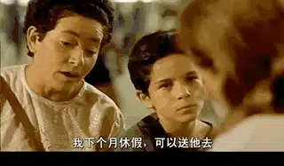
而小男孩非常淘气，眼神中尽是惹朵拉讨厌的怀疑
之后不幸发生了，戴安娜意外遭遇车祸去世

约书亚立马变成了无依无靠的孤儿，他唯一的希望就是，找到他的爸爸耶稣

而这场悲剧，朵拉看在眼里，也许正是这仅存的同情，朵拉将约书亚带回了家，但是往后的日子还长着呢？朵拉不可能一直照顾约书亚，朵拉想到了自己在车站认识的人贩子，索性将约书亚卖给了他。她自己安慰自己，他的朋友只不过是将这些孩子卖给欧洲需要孩子的家庭中，她用约书亚“换”来的钱买了新电视机，而艾琳严厉的告诉朵拉，他们是要将小孩杀害，贩卖人体器官。良心难安，朵拉想办法救回了约书亚，于是，像是生命的两极——纯真与苍老，喜悦与忧伤，一老一少一起踏上了寻找约书亚父亲耶稣的旅程。
1、走到绝境
一向冷漠的朵拉并不打算一直陪着约书亚去找父亲，事实上从心底里，朵拉认为耶稣也不过是像自己父亲一样的酒鬼，对于寻找这样的父亲，也只有像约书亚这样的小孩才会这么有盼望？似乎朵拉都能够想象的到，约书亚看到酒鬼父亲后是多么的心碎和失望。她见过太多不负责任的酒鬼父亲，而她自己的父亲也是这个样子的，当朵拉十几岁的时候，无意中撞见了“失踪”多年的酒鬼父亲时，朵拉问他，“你认识我么？”而父亲的回答，彻底的熄灭了朵拉对于父爱的期待，“我怎么会忘记你这个大美女呢？”
所以在大巴中途休息的时候，朵拉将乔安娜的信和所有的钱留给了熟睡中的约书亚，她自己买了一张返回里约热内卢的车票，但是没有想到，正受良心谴责的朵拉忽然看到，约书亚并没有坐大巴离开，而是坐在远处望着她，更加不幸的是，约书亚将钱丢在了大巴上，二人陷入到无钱无粮的绝望中。
2、短暂的爱情之火
饥肠辘辘的二人，遇到了一个刚好顺路的货车司机凯撒，凯撒风趣幽默又充满怜悯和对人的尊重，渐渐地，朵拉爱上了凯撒。
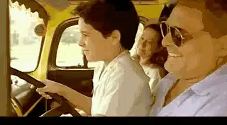
但是外表阳光的凯撒心底有着一颗居无定所的心，对于一个司机，凯撒认为萍水相逢的滋味最难受，因为现在是朋友，分开了，就是永远，而初遇爱情的朵拉却勇敢的吐露了心声

朵拉希望他们能够在一起
朵拉让凯撒等一下，从未化妆的朵拉去卫生间梳洗，抹了口红，她希望这个时刻，她在自己喜欢的凯撒面前是漂亮的
但是凯撒选择了离开，对于感情的失落，导演处理的非常“安静”，并不是通过剧烈的情感表达来表现失落，满怀期待的朵拉从窗户上看着开车远去的凯撒，伤心从中静静流淌而出，真实而动人

看到伤心的朵拉，一向视朵拉为骗子的约书亚，第一次用他可爱的方式安慰了朵拉，“告诉你一件事，你擦口红很好看”
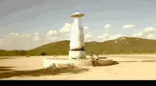
3、失望的约书亚
深受安慰的朵拉也决心帮助约书亚找到他的父亲耶稣，即使她觉得会是一场悲剧

终于二人到了目的地，随着欢快激动的音乐，约书亚快跑在通向幸福之家的路上

但是，约书亚并没有看到耶稣，房主告诉他们，耶稣卖掉了这里的房子，搬去了其他的地方，并且钱一到手就成天买醉，刚才欢快的音乐变成了忧伤的大提琴独奏，约书亚伤心的走出房门
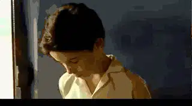
房主将耶稣最新的地址告诉朵拉，而二人已经身无分文，但是聪明的约书亚忽然想到，可以写信赚钱
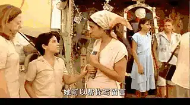
正值当地人的宗教节日，很多人都想要写信给上帝和自己的亲人，很快，他们就赚够了路费

两人高兴的在圣像面前合影
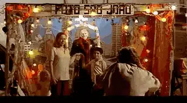
可爱的约书亚还买了漂亮的裙子送给朵拉
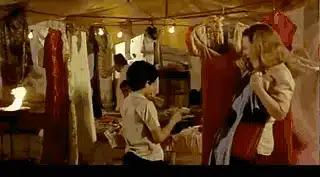
晚上住在旅店，面对那么多的信，约书亚不知道如何处理，他犹豫了一下，还是无奈的将信丢进了垃圾桶，而朵拉心底里的人性却被慢慢唤醒了，朵拉要留着这些真挚的信
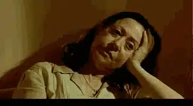
4、消失的耶稣
二人再次出发，来到了巴西最南边的城市，找到了耶稣的住宅，但是令二人失望的是，耶稣也搬离了这里，无奈他们放弃了寻找，打算返回里约热内卢。就在这时耶稣的儿子以赛亚听到有人在找自己的父亲，便来找他们

约书亚也看到了他另外一个哥哥摩西，他继承了爸爸耶稣的木匠手艺，有着精湛的手艺

当提到耶稣的时候，摩西和以赛亚也不知道他哪去了，因为忽然有一天耶稣不告而别，而摩西告诉约书亚，耶稣确实是一个“酒鬼”
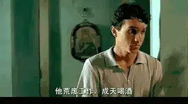
那耶稣到底去哪里了？半年后，他们收到一份耶稣寄给乔安娜的信，因为是寄给别人的信，所以以赛亚和摩西都没有打开信，而此刻约书亚来了，兄弟两想要让朵拉公布信里的内容。原来摩西和以赛亚的母亲去世后，耶稣爱上了乔安娜，但是乔安娜后来离开了耶稣，去了里约热内卢，这让耶稣非常伤心，成日醉酒，而他忽然离开摩西和以赛亚，是因为他决定去里约热内卢寻找安娜，他要和安娜一起回来，和大家团聚。

而家里的墙壁上也挂着耶稣和乔安娜的合影
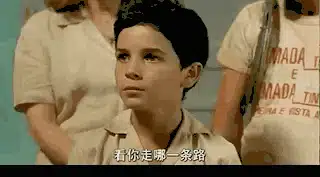
当朵拉亲身见证到，原来约书亚说的都是真的，耶稣和他说的一样，他不仅是一个好的木匠，而是是一个好的丈夫和父亲。约书亚和耶稣彻底的唤醒了她沉睡已久的人性，她明白，约书亚和哥哥们在一起是最好的，乘着黎明前的夜色，朵拉要静悄悄的离开约书亚，离开前她推开门看了看睡在哥哥中间的约书亚，换上了约书亚买给她的漂亮裙子，再一次在镜子面前画了口红，既安静的告别了约书亚，同时也告别了过去那个冷漠自私、对生活毫无热情的自己
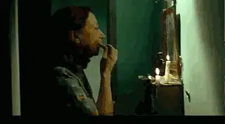
最后，朵拉充满祝福地将乔安娜寄给耶稣的信放在耶稣寄给乔安娜的信旁
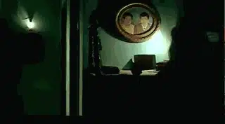
就这样一段旅程彻底的更新了朵拉的生命，在爱与被爱、关心和被关心中，温暖的人性被重新唤醒了，过去朵拉写了无数封冷冰冰的信，如今她在大巴上第一次感受到写信时流淌而出的真挚情感

这个时刻，她无比的思念自己的父亲，过去她对于父亲只有酒鬼的记忆，如今小时候父亲让她坐在车座前大声鸣喇叭的温暖记忆却被唤醒了，过去只有仇恨和失望，如今有了温暖和盼望

二、失衡的社会——每个人都在寻找
90年代的巴西，工业化造成巨大的人口流动，而经济上的不景气，使得80多万青年背井离乡，社会动荡，亲人分居两地，人们普遍处于一种失衡的状态，而工业化下的大城市拥挤忙碌，贫富差距悬殊、犯罪率高升、暴力执法普遍。

人们似乎在这样一种生活状态之下失去了温暖的“家”，所以这样一部有关寻找的电影也正是当时无数人的心里诉求，很多找朵拉的写信都是关于远在一方的亲人，而导演给这个处处都在寻找的社会的答案是：大家需要回到团结、善良和爱中，每个人要重新找寻回失落的良善。所以电影综合运用很多的手段去刻画寻找以及良善的家园。
1、象征家园的色彩及图画
影片的主要色调是土黄色，与“寻找家园，寻找父亲”的主题相契合，土黄色是印第安原始艺术中的色彩基调，它代表着大地、家园
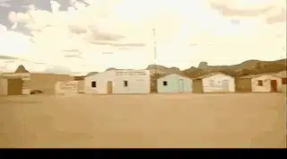
除了色彩上面的寓言，朵拉家中白色小屋的那幅画，还出现在旅程中间

这幅画的场景最后在耶稣家中实现

这都代表着巴西人民对于家园的向往
2、中央车站与家园的对比
中央车站是混乱、忙碌的，无数人插肩而过，但却没有交流

一副北上广上下班高峰挤地铁的感觉
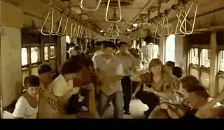
而在中央车站找朵拉写信的人，很多内容都是关于痛苦、欺骗和悲伤

但是朵拉和约书亚最终到达的“家园”，城市整洁、干净充满诗意

那里的人找朵拉写信，都是充满了感恩和虔诚，即使他们更加贫穷
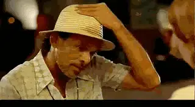
三、信仰中的盼望——耶稣一定会再来
在这样的一个故事中，增加信仰表达是很有难度的，但是导演却处理的非常好，对于不了解基督教的人来说，本片在前两个层面就可以将你征服，而对于了解基督教的人来说，本片的意味更加深远，那么，导演是如何做到的呢？——那就是这部电影充满了信仰象征。
1、充满象征的名字
本片主人公叫约书亚，寻找的父亲是耶稣，而耶稣的其他两个儿子是以赛亚和摩西，这些都是圣经中的人物，主人公的名字为什么叫约书亚呢，圣经中这样记着“耶和华的仆人摩西死了以后，耶和华晓谕摩西的帮手、嫩的儿子约书亚说：“我的仆人摩西死了。现在你要起来，和众百姓过这约旦河，往我所要赐给以色列人的地去。”，我们可以知道约书亚是被上帝拣选带领以色列进入应许之地的伟大先知，所以约书亚这个名字非常适合这部公路电影的主题和内涵。
2、随处可见的宗教符号及场景
除了名字上的象征，电影中许多场景都与宗教有关，比如母亲遭遇车祸，无助的约书亚来到圣像面前仰望，而后面的卡车司机凯撒更是一个传道人，卡车上面写着圣经中的话语，而找朵拉写信的人，很多信都是写给耶稣的信仰表达，电影中还有直接表现当地宗教节日的场景。而耶稣所在的城市是巴西最南部，号称世界的尽头，更是在代表最终的“新天新地”。

3、整个故事就是一个圣经预言
耶稣爱乔安娜，并且去找安娜，让摩西、以赛亚等待自己回来，不正是耶稣进入堕落的世界（里约热内卢）拯救堕落的人类（乔安娜）的故事，而蒙得救的无数的“摩西”可以称上帝为父，成为上帝的儿女。而耶稣成就了救恩之后，整个人类历史都在逐渐走向最后的终点——耶稣再来，“摩西”、“以赛亚”“约书亚”都需要在信心中等待耶稣再来。

而耶稣的孩子们，都需要向“约书亚”那样，带领一个又一个被罪所伤害的朵拉来认识耶稣，即使约书亚幼稚、能力很弱，但是他一直心存信心，坚信他的父亲是那位万王之王耶稣。而对于耶稣神性的认识，必然会重新唤醒真实的人性和对终极真理的渴慕，因为人性的根基深深的扎根在耶稣的福音之中，杀掉了神性，也就泯灭了人性，因为没有了上帝，人的道德将毫无意义，人本身高贵的尊严也变得毫无根据。
关注并回复： 中央车站 获取电影资源
这里没有挑逗你眼目情欲的小鲜肉，也没有挑动你肉体情欲的段子
更没有膨胀你今生骄傲的鸡血。
我们只在乎那些最质朴真诚的作品，在那里我们才能恢复真正的想象力
我们也坚信这才是我们真正需要的。

个人微信号：six_hundreds_hits
因苹果公司规定，微信iOS 版赞赏功能关闭
如对本文表示支持，苹果设备用户可通过以下微信二维码赞赏